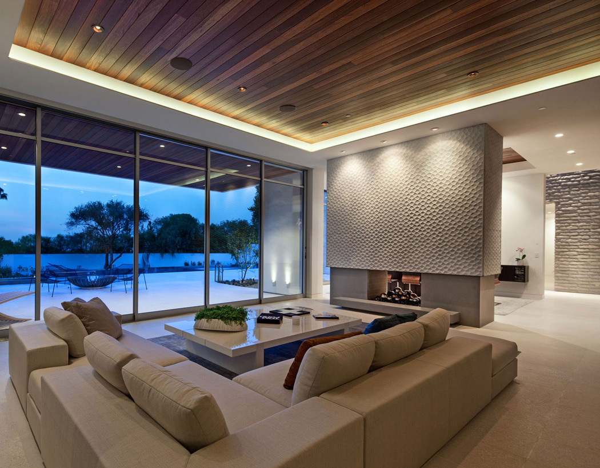
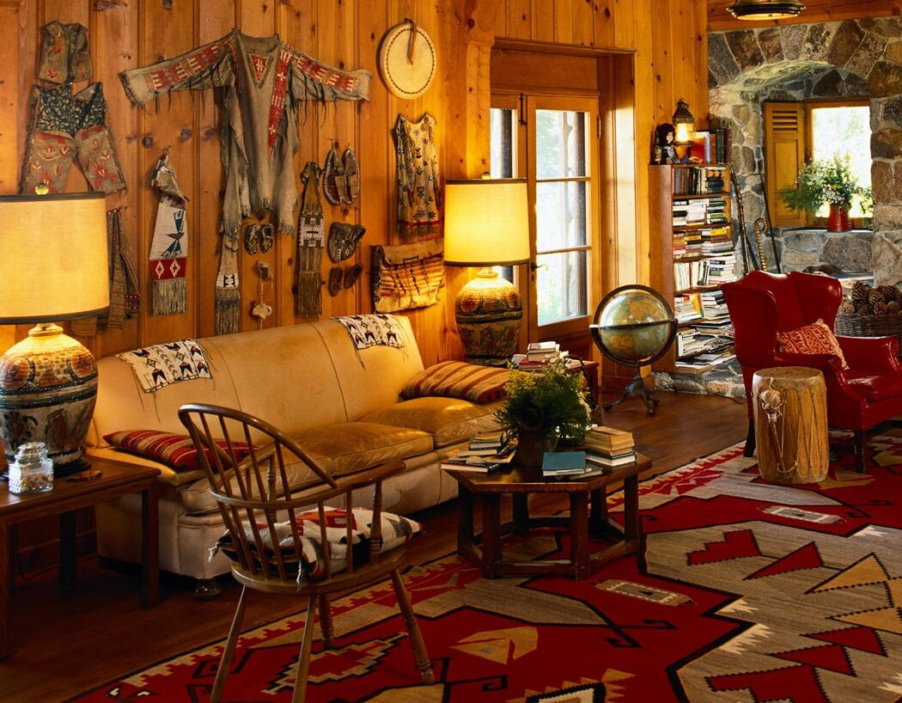
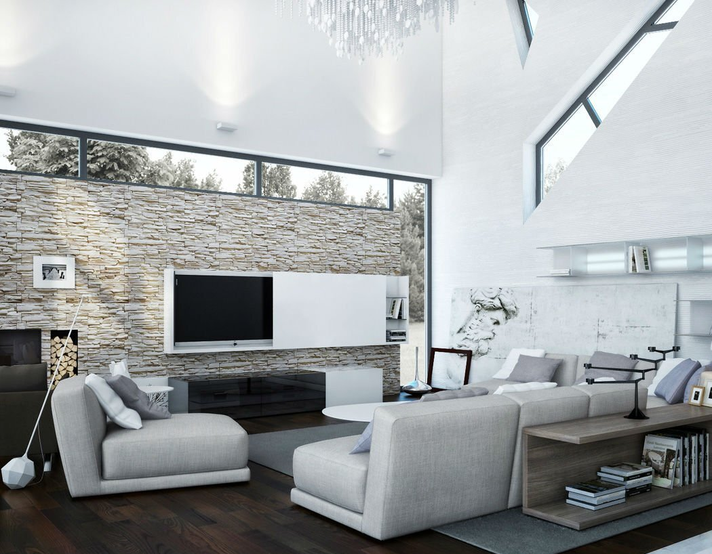
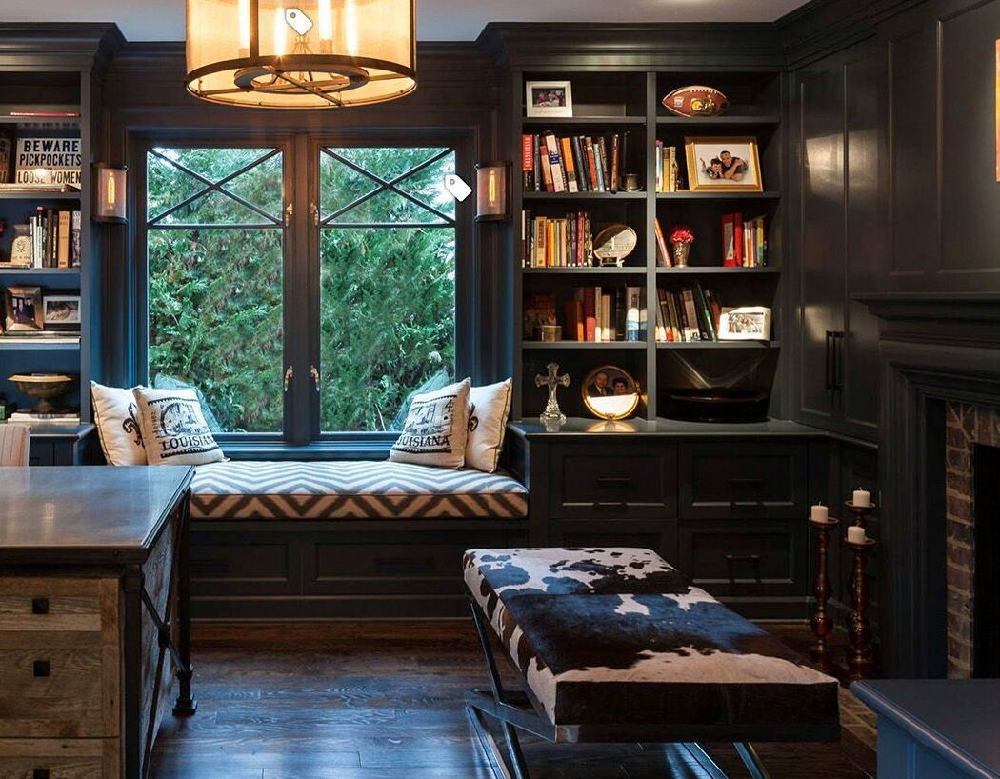
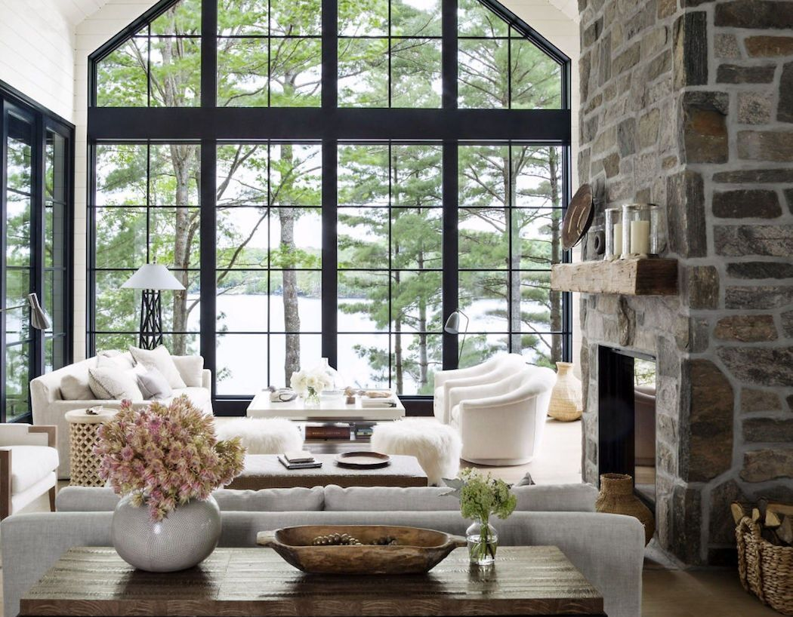
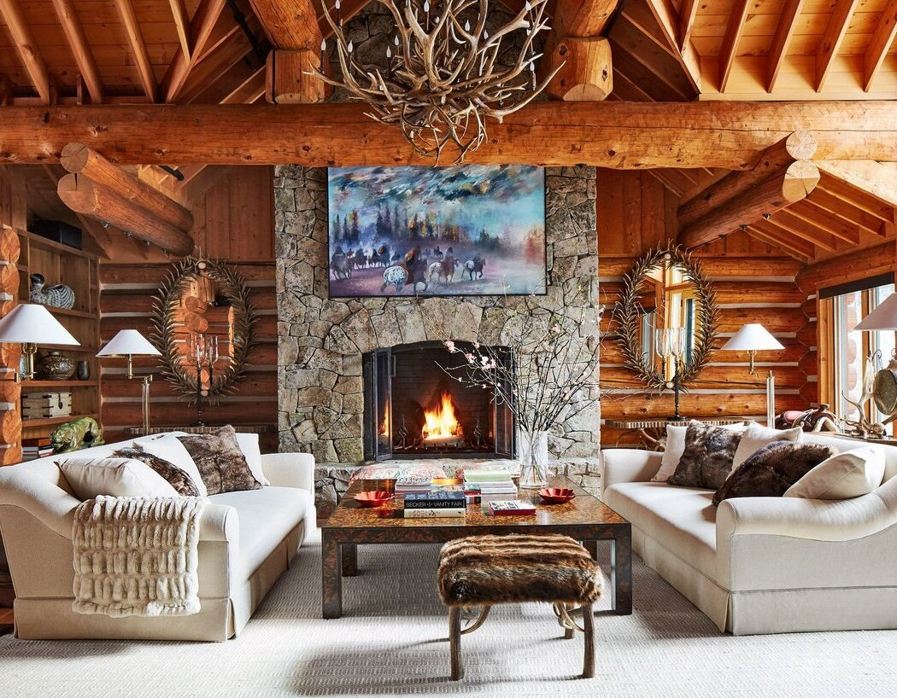

Modern design is an interior design style characterized by a monochromatic color palette, clean lines, minimalism, natural materials, and natural light. It refers specifically to a historical aesthetic movement that took place during the early to mid-twentieth century.
Traditional style often includes silk, linen and velvet upholstery and window coverings in damask, florals, stripes and plaids with ornately detailed dark wood, inspired by 18th and 19th century designs. Layered in color and texture, traditional style interiors bring a sense of history and glamour to a space.

Traditional style often includes silk, linen and velvet upholstery and window coverings in damask, florals, stripes and plaids with ornately detailed dark wood, inspired by 18th and 19th century designs. Layered in color and texture, traditional style interiors bring a sense of history and glamour to a space.

Defined by clean lines, decorated minimalism, and current trends, contemporary interiors are distinctly of-the-moment—even when the moment changes. Found throughout homes, offices, and retail settings, below AD dives into just what makes this versatile style and how you can bring it into your space.
Industrial interior design is a style of interior design that combines raw and rough materials with modern elements. This blend of both old and new allows designers to make use of natural, recycled and repurposed materials, while still maintaining a sleek and modern look.

Industrial interior design is a style of interior design that combines raw and rough materials with modern elements. This blend of both old and new allows designers to make use of natural, recycled and repurposed materials, while still maintaining a sleek and modern look.

Transitional interior design is a mixture of the traditional and modern styles. Bringing together pieces from various design styles creates a singular design that updates the classics with a cohesive, modern feel. It balances luxury with comfort, masculine with feminine, and antiques with new pieces.
Rustic interior design represents a natural, rough, aged, and casual design style. The category is broad and incorporates a range of variations on the style, including Tuscan, coastal, cottage and modern rustic. Regardless of the variation, rustic style highlights rugged, natural beauty.

Rustic interior design represents a natural, rough, aged, and casual design style. The category is broad and incorporates a range of variations on the style, including Tuscan, coastal, cottage and modern rustic. Regardless of the variation, rustic style highlights rugged, natural beauty.